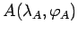
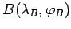
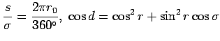
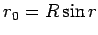

Inhalt Index DeskTop Bronstein

 Geometrie Sphärische Trigonometrie Berechnung sphärischer Dreiecke Kleinkreis
Geometrie Sphärische Trigonometrie Berechnung sphärischer Dreiecke Kleinkreis


Die Bogenlänge s zwischen zwei Punkten  und  auf einem Kleinkreis k läßt sich gemäß Abbildung aus den Beziehungen  und  gewinnen:

| Beispiel |
|
Für |